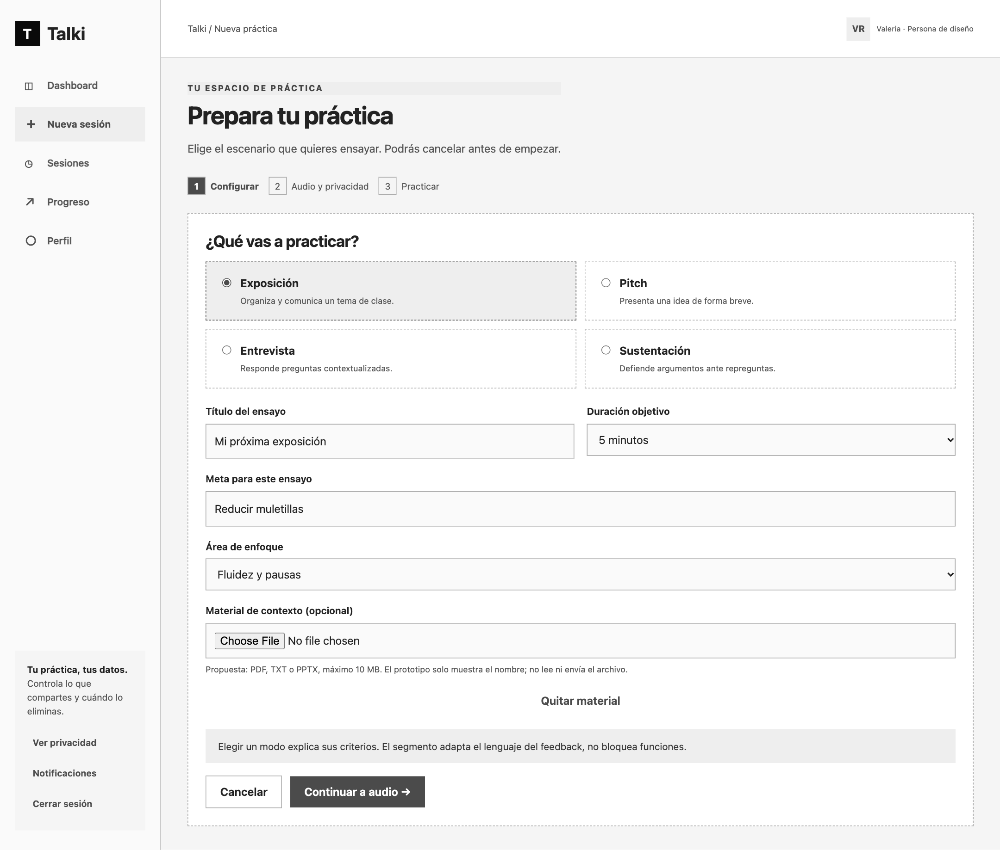
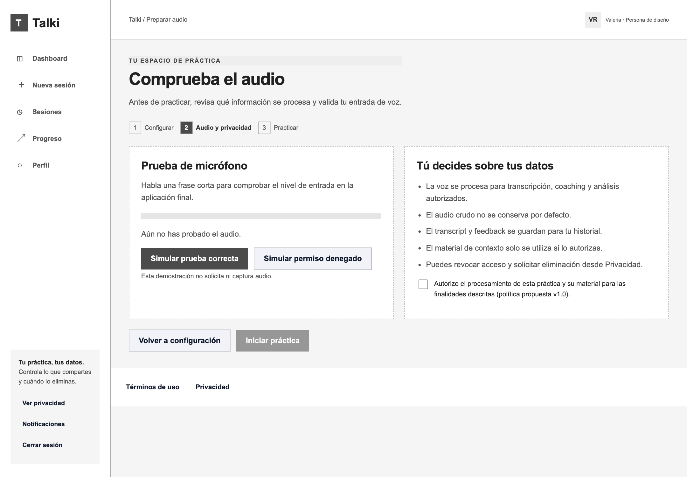
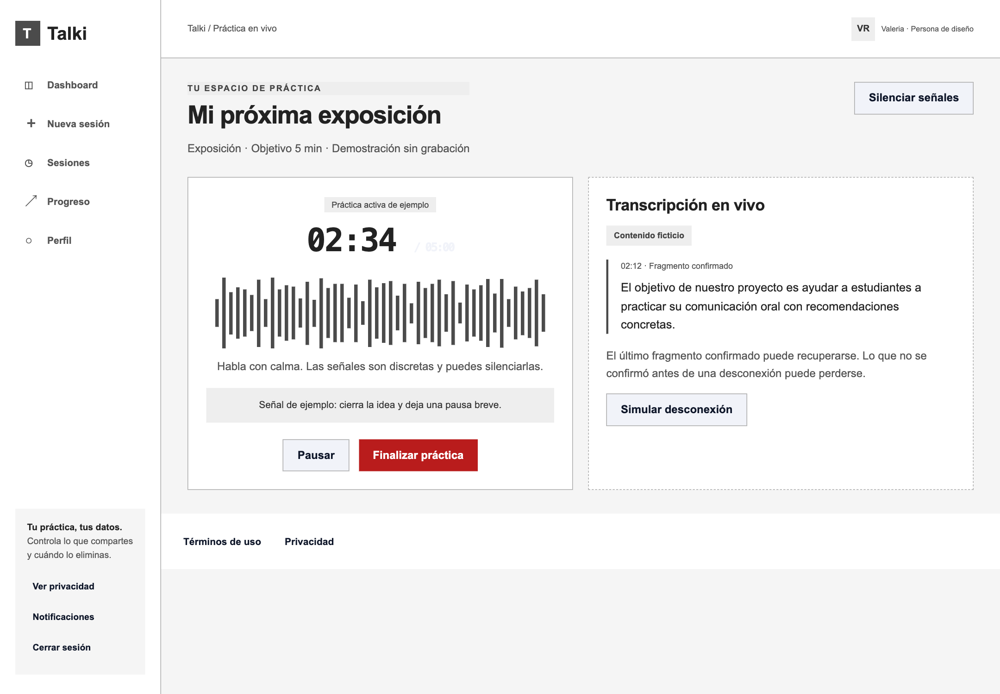
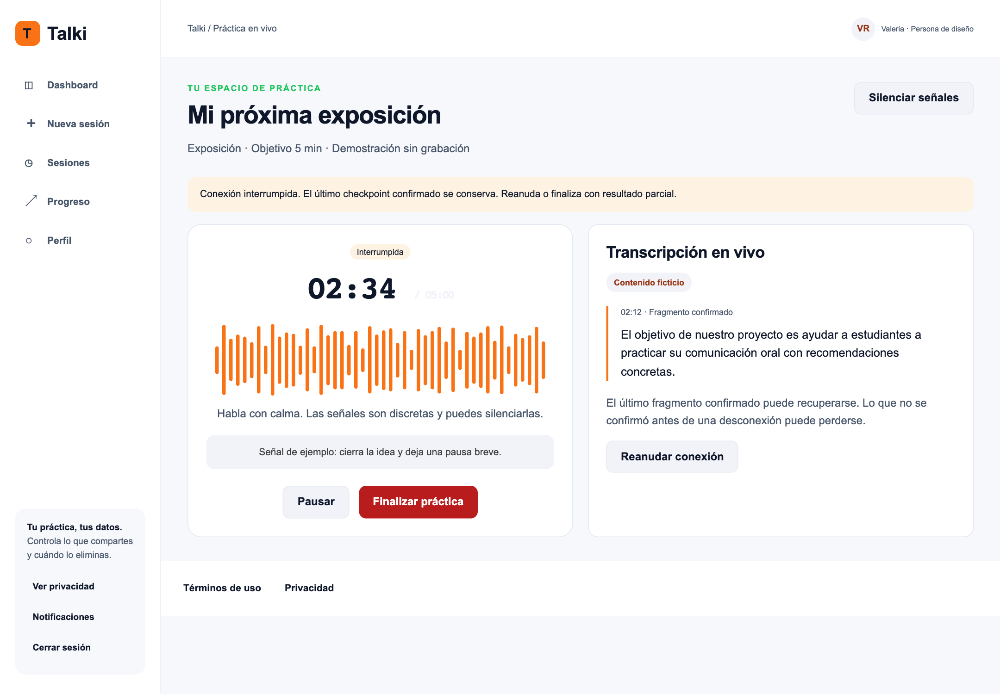
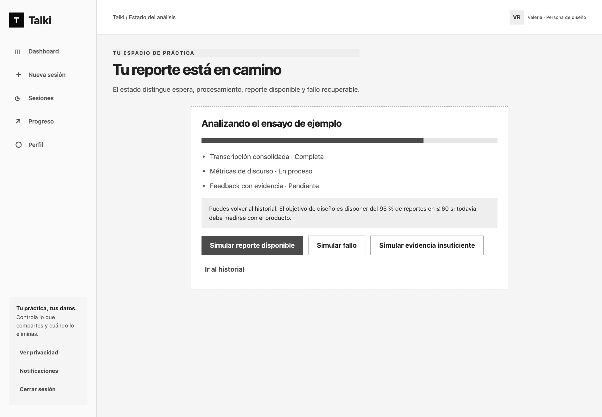
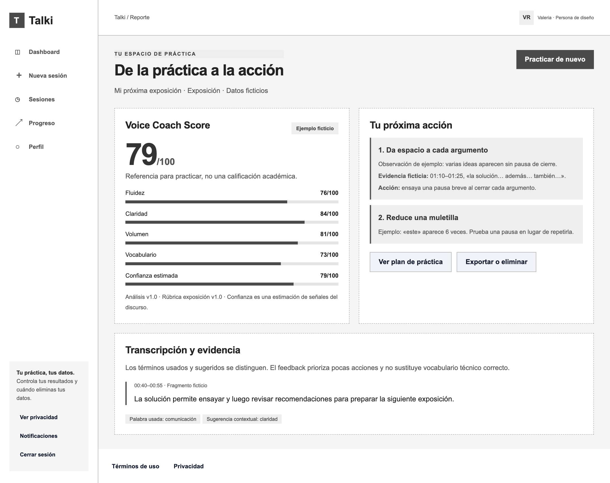

UG-02: Ensayar una entrevista o sustentación con material autorizado
Rodrigo · US30, US31, US34, US38 · Aplicación web
1. Elegir escenario y material
S01
2. Comprobar audio y consentir
S02
3. Responder por turnos
S03
4. Recuperar conexión
S03
5. Confirmar cierre y análisis
S04
6. Revisar evidencia contextual
R01
Si se deniega micrófono, permanecer en S02. Tras desconexión, reanudar desde checkpoint o confirmar cierre parcial. El material personal queda fuera del archivo exportado.